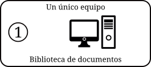
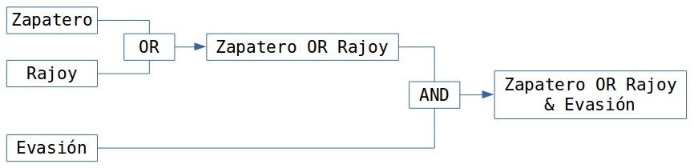

Encontrar el sentido a los datos cualitativos
Análisis temático con Atlas.ti
Juan Muñoz
Universitat Autònoma de Barcelona
http:/juan.psicologiasocial.eu

Contenido - Temático

¿Cómo?

Proceso de análisis

Ejemplo: códigos-categorías-temas
 Graneheim & Lundman (2004, p. 108)
Graneheim & Lundman (2004, p. 108)
Narrativas sobre hipoglucemia
Primer ejercicio de codificación

Por grupos, realizar una codificación del callejero de Montevideo
Fases del análisis (Atlas.ti)

Transcribir: herramientas


Software
Soundscriber:
Convenciones “jeffersonianas”

Jefferson (2004, p. 15)
Ver también: Bassi Follari (2015)
Control de versiones

Ejercicio: gestión de datos
- Formato documentos
- Etiquetado archivos
- Sistema de control
Y luego…


¿Qué permite?

- Organización e integración
- Datos multimedia
- Búsqueda y recuperación
- Vinculación
- Representación gráfica
- Trabajo en equipo
Estrategias trabajo en equipo


Agregar datos

1. Documentos > Nuevo > Agregar documentos (a biblioteca)
2. Documentos > Nuevo > Asignar documentos externosEjercicio: Agregar datos
Desde la carpeta “Prensa-UY-2018/Documentos”
- Agregar a biblioteca
- Asignar documentos externos
“Transportar” UH

Copiar y restaurar
Proyecto > Guardar paquete de copiaProyecto > Desempaquetar la copiaO
Documentos > Administrador de fuente de datos
* Abrir Administrador de biblioteca
* Fuentes de datos > Exportar
* Exportar documentos seleccionados 
Copiar carpeta donde estén UH y documentos
Proceso de análisis
Ejercicio memos-anotaciones
- Crear una memo
- Etiquetarla como “Proceso”
- Describir los pasos dados hasta el momento
- Guardar
- Crear una memo “Objetivos”
Ejercicio memos: insertar PDF
- Crear memo:
- Etiquetarla “van Dijk”
- desde carpeta “Documentos”…
- Insertar PDF “vanDijkOpiniones.pdf”
- Guardar UH
Familias

Ejercicio: Familias de documentos
| Izquierda | Derecha | |
|---|---|---|
| Editorial | ||
| Opinión |
Crear Superfamilias de documentos
Codificación estructural

Ejercicio autocodificación
Códigos > Codificar > Codificación automática- Autocodificar participantes
- Autocodficar Presidente-Zapatero
- Autocoficiar Presidente-Rajoy
- Otros políticos
Menús informes
Componentes con opciones de impresión

Destino del informe

Ejercicio: Informes
- Explorar diferentes tipos de informes: Documentos, Códigos, Memos…
Reducción
[En la investigación cualitativa] el reto es dar sentido a una cantidad masiva de datos, reducir el volumen de información, identificar pautas significativas, y construir un marco para comunicar la esencia de lo que revelan los datos.
Patton (1990, pp. 371–372)

Ejemplo: códigos-categorías-temas
Graneheim & Lundman (2004, p. 108)
Narrativas sobre hipoglucemia
Estrategias de codificación

El gato


Ejercicio: Segmentación / Codificación
- Crear citas libres
- Crear códigos libres
- Utilizar otras opciones de codificación
Comparación constante


Relaciones entre códigos

Relaciones entre códigos

Ejemplo: códigos-categorías-temas
Graneheim & Lundman (2004, p. 108)
Narrativas sobre hipoglucemia
Redes temáticas

Editar Relaciones

Consultas

1.- Códigos-Familias de Códigos
2.- Condiciones (Operandos)
3/4.- Expresiones formuladas
5.- Resultados
6.- Distancia máxima
7.- Selección de doumentos
8.- Crear super-código
9.- Borrar / Imprimir
10.- Edición expresionesOperadores Booleanos

Construcción de una consulta
“Todas las citas codificadas como ‘Evasión’, realizadas por Rajoy o por Zapatero”


Operadores Booleanos

Operadores Semánticos


Operadores de Proximidad


Consultas: Alcance

Concurrencias

Unir UHs